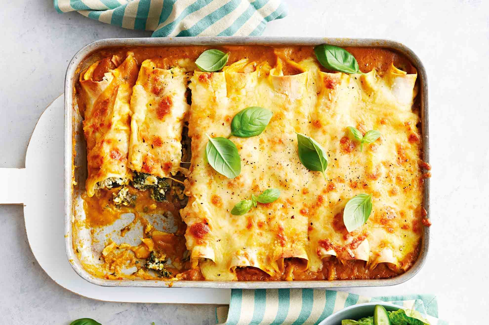

Canelloni

A very special old Italian dish that warms your stomach, as well as your heart.
Ingredients
- 1/2 cup olive oil
- 1 pound lean ground beef
- 1 onion
- 1/4 teaspoon dried sage
- 1/4 teaspoon dried rosmary
- Salt
- 1/2 cup white wine
- 4 tablespoons butter
- 4 tablespoons flour
- 2 cups milk
- 2 egg yolks, lightly beaten
- 12 ounces mozzarella cheese, cubed
Steps
- In a large skillet over medium heat, warm oil and saute ground beef with the onion, sage and rosemary; cook until meat is evenly browned and crumbly. Drain fat. Add salt and 1/2 cup white wine; cook until wine is evaporated. Set mixture aside.
- To make the Bechamel sauce: Melt 4 tablespoons butter in a medium saucepan over medium heat. Add flour and stir until well incorporated. Stir in milk and bring to a slow boil until mixture thickens. Remove sauce from the heat. In a steady stream, pour the bechamel in to the beaten egg yolks, whisking constantly. Stir the sauce into the meat mixture. Stir in the cubed mozzarella.
- In a medium saucepan over medium-low heat, melt 2 tablespoons butter and saute onion until soft and translucent. Add 1/2 cup white wine and let it cook down to evaporate; add stewed tomatoes and salt. Mix well; simmer for 15 minutes.
- Bring a large pot of lightly salted water to a boil. Add pasta, a few at a time, and cook for 8 to 10 minutes or until al dente; using a slotted spoon, remove immediately to a pot filled with cold water. Lift pasta out with slotted spoon and arrange on a flat surface.
- Preheat oven to 400 degrees F (200 degrees C). Lightly grease a 9x13-inch baking dish.
- Spoon a line of filling into each shell, starting from one end and using your finger to push the filling inside of each shell. Place cannelloni in prepared baking dish and cover with tomato sauce mixture.
- Bake in preheated oven for 15 minutes or until heated through; when finished baking, allow to stand for 5 minutes and serve.
Back home